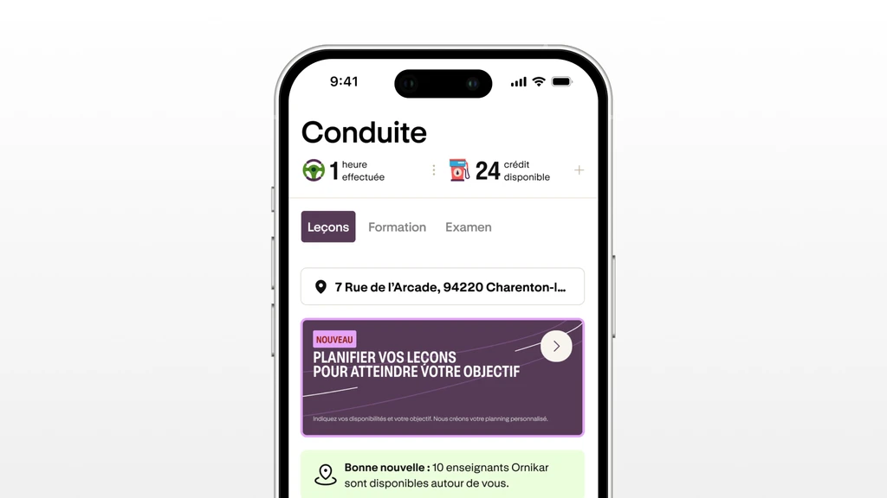
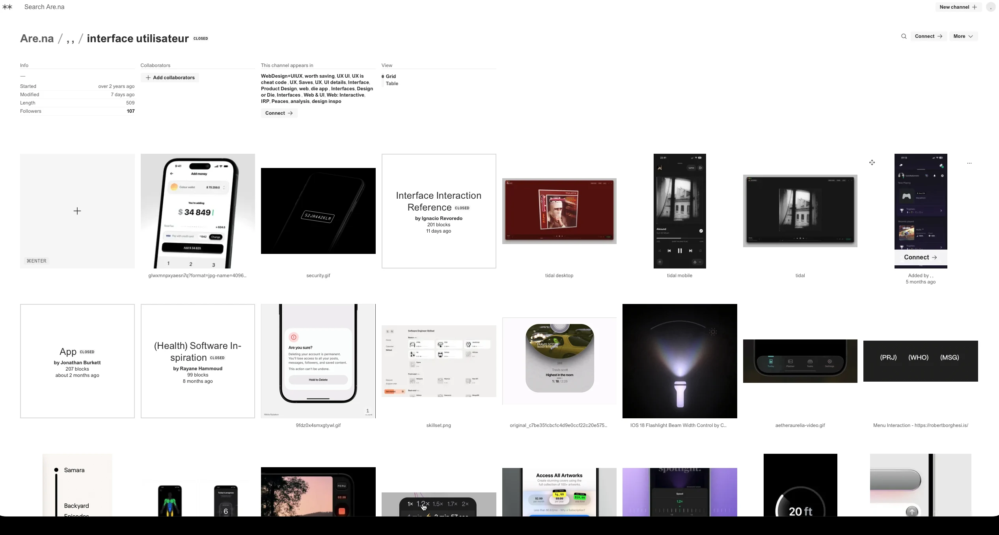
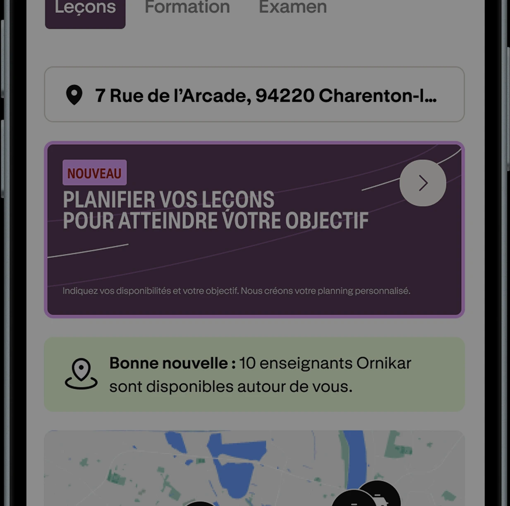
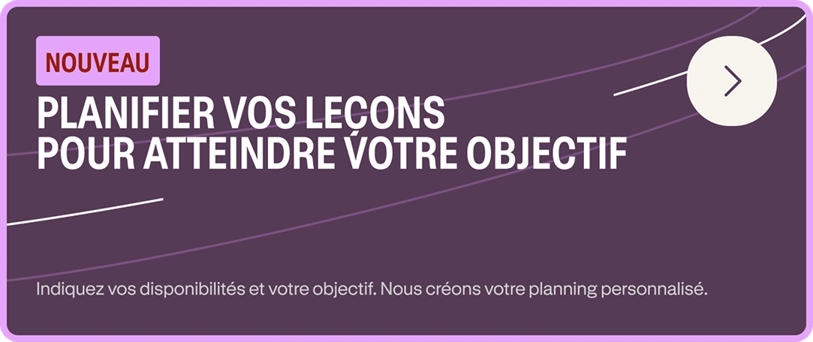
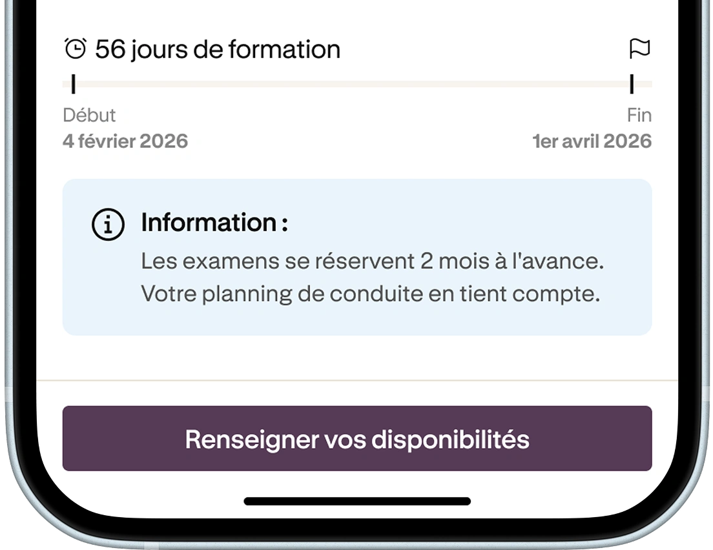
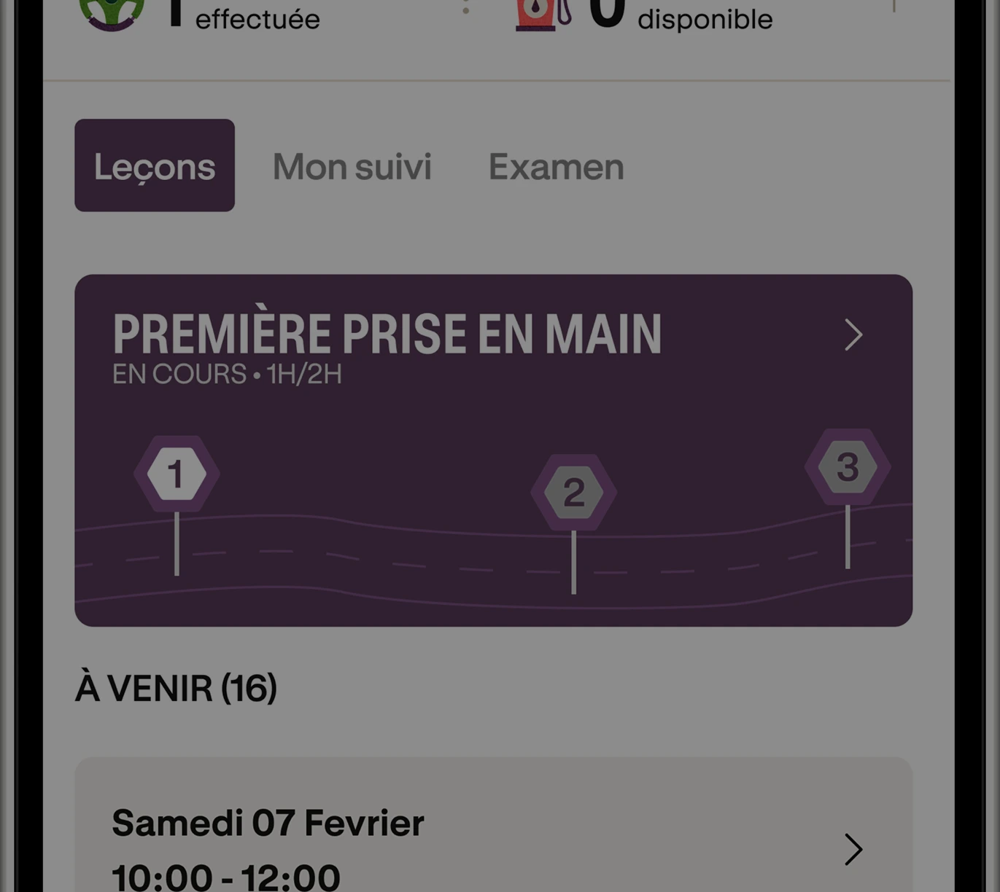
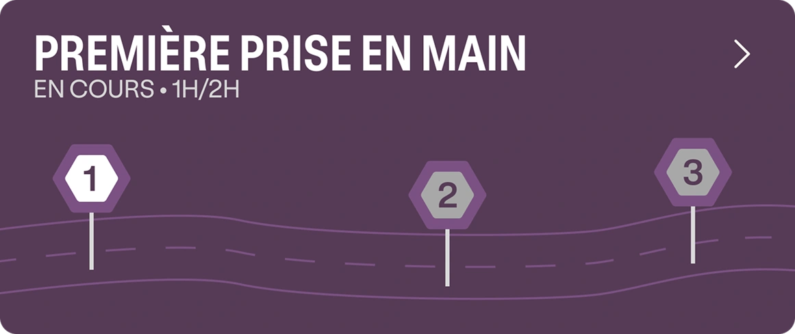
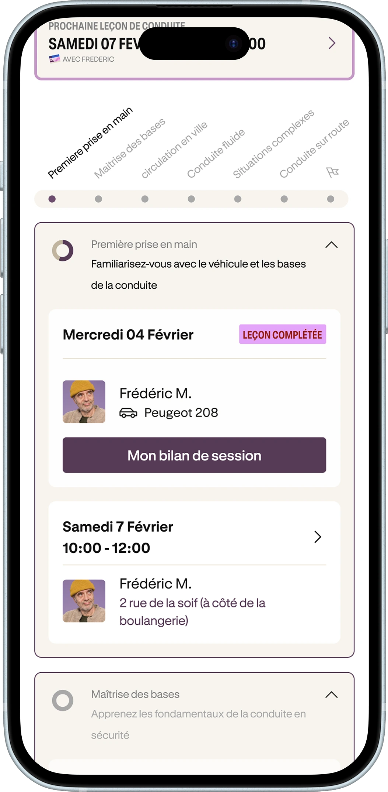

Ornikar
2 weeks, Design Crew Bootcamp
Ornikar lets students book driving lessons on their own schedule. With Léa Durand and Stéphanie Try, I redesigned how they plan those lessons, so they always know where they're headed. I led research, interaction design, prototyping and testing.

Research
We wanted to understand three things: what keeps students going, how they actually book, and what flexibility means to them.
Matthieu, 26
"When I had a visa deadline, I knew exactly what I needed to do every day."
Lola, 18
"You could really see the progression from one session to the next."
Stéphane, 26
"Having support makes things so much easier for people like me."
The issue wasn't scheduling. It was motivation.
Students weren't disorganized, they were lost. No goal, no sense of progress, no reason to plan ahead. A better calendar wouldn't change that.
The idea
We looked outside driving schools. Marathon apps make a long goal feel manageable. Wecasa makes booking feel effortless. We took both.

The solution
Four moments, in the order a student meets them.


booking second

not someday



stop by stop
Process
Week 1
Week 2
of the game
Testing
We put the prototype in front of students with five tasks, one for each new piece.
watched for
Team
- Léa Durand UX/UI designer
- Stéphanie Try UX/UI designer
- Matthieu Product designer